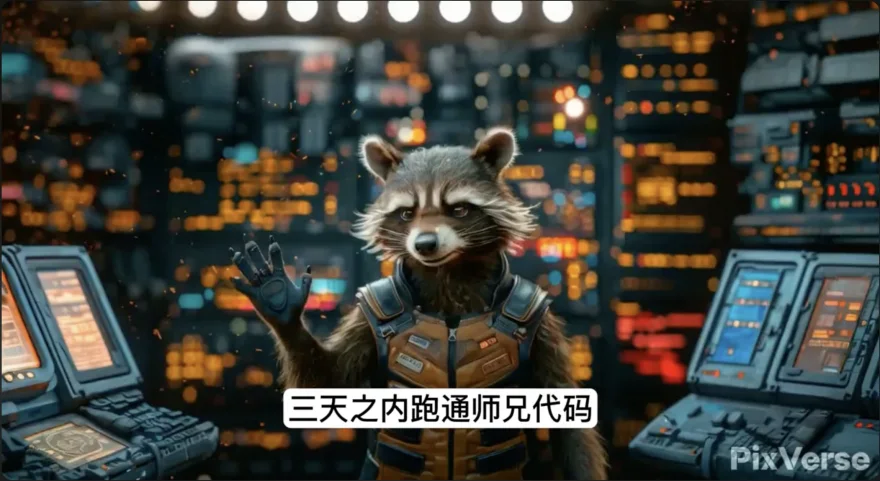

Why I make films
I directed my first short film after graduating high school in 2015, and the experience changed me. The film got over 2,000 views within its first two hours on Tudou, a now-defunct Chinese video platform, a number that felt surreal at the time. A family friend told me that watching it used up her entire internet data for the month. It was the first time I realized that a story living in my head could resonate so powerfully in others'.
Filmmaking has been my greatest passion ever since. Every two years or so I make a new short film to explore a philosophical question I am wrestling with, from how technology reshapes human connection to whether a robot can embody romance. If Voldemort split his soul into horcruxes, I like to think I have poured a part of mine into every film I have made.
Founder, MIT Film Makers Association
In 2022 I founded the MIT Film Makers Association and served as its first president. I have always believed that everyone has a story worth telling. Storytelling is how we pass experience, wisdom, and emotion between people and across generations. Yet the internet is dominated by two groups: widely successful people whose stories naturally attract attention, and full-time creators whose primary goal is profit, who often tailor their content to entertainment trends and dilute the deeper message along the way.
There is a vast group in between: people with valuable life experience, insight, and hard-earned knowledge who are not widely known. People who know how to get into a good school, navigate a PhD, or balance material success with spiritual fulfillment. Their stories matter too, but most of them have neither the time nor the production support to turn those stories into something shareable. Videography is expensive and slow: the gear, the planning, the crew. My goal is to lower that barrier so more people can share meaningful stories. MIT is an engineering school, and I believe we can turn that strength into the power of speech.
Founder, MIT AI Film Hack
When DALL·E 2 launched, even though it only made simple still images, I knew an exciting time had arrived and wanted to see how it would transform video making. So in 2023 I started the MIT AI Film Hackathon, a competition where people use AI tools to make three-minute films. In the first edition most entries played like slide decks, one frame after another, and even then some people told perfect stories with it. Since then hundreds of people have joined across three editions, with quality that amazes me every year.
I still remember the wave of fear when Sora was announced a few days before one of our hackathons. I wondered whether the event would feel obsolete, like people who proudly walked miles before the car was invented. But watching the films evolve taught me something: the technical quality has improved dramatically and the time to produce a video has collapsed, and what sets a film apart is still the content.
Every hackathon film is on the MIT Film Makers Association YouTube channel. The three editions so far:
 ▶ Playlist
▶ Playlist
Tell Me Your Dream
I chose this theme because AI-generated images were full of imperfections and surreal hallucinations that looked like dreams, and a tool called Deforum could morph smoothly between frames with a disorienting, dreamlike quality. We received eight films. My favorite is DOG: Dream of Galaxy.
 ▶ Playlist
▶ Playlist
Space I Call Home
This edition was sponsored by almost every major generative-AI startup, including Pika, Pixverse, and ElevenLabs. Character and spatial consistency in generated video were still poor, so I also invited three 3D-generation startups, Luma AI, VAST AI, and Meshy, to see whether 3D could be the fix. Fish Tank showed how 3D generation might help filmmaking, and The Tale of Lipu Village impressed me with its creativity. The Media Lab wrote up the event here.
 ▶ Playlist
▶ Playlist
Dance in Life
I picked dance to challenge the motion consistency of existing tools and see how far people could push the frontier. My favorite this year is The Clown, which blends real footage with AI-generated shots.
Organizer, CVEU workshop at CVPR
Alongside the hackathons I co-organized the Generative AI for Visual Arts workshop at CVPR in 2024 and 2025 with Anyi Rao. Our goal is a community of AI-empowered storytellers where researchers, artists, students, and engineers can trade ideas, share experience, and find each other. I also serve as a film judge for the HKUST AI Film Festival 2026, hosted by the Division of Arts and Machine Creativity at the Hong Kong University of Science and Technology, and in 2025 I was invited to speak at the Cinequest Film Festival.
My films

My Dating Life in Silicon Valley 重生之我在硅谷相亲
A short-film series that makes fun of dating in Silicon Valley through four representative male stereotypes. I post as 湾区导演张emo on Rednote.

Who Dares Kill My Horse: Academic Edition 敢杀我的马 学术版
A short, funny film a group of graduate students made with text-to-image and image-to-video models, mocking publishing pressure, peer review, and other academic rituals.

Robotic Dog Finding Me a Girlfriend 养狗千日，帮我追到了小姐姐
The most humorous film I have made: a robotic dog helps its owner pursue a relationship. We shot the whole thing in a day and a half, a record for us. To be clear, we do not endorse the dog's methods. Thanks to Boyuan Chen for teleoperating the robot.

Decode MIT 遇见MIT
A documentary about graduate student life at MIT. I directed it. It has passed 171,000 views on Bilibili.

My Poetic AlphaFriend 交通诗人
Made in my last year of college and inspired by a true story: two boys build an AI that becomes their best friend and confidant, and by chance it enrolls one of them in a class where he finds love. Shot in 2019, well before ChatGPT made the premise familiar.

Memory Cut Pro
Made when I was immersed in neuroscience and astounded by optogenetics, which can change an animal's emotions and thoughts through devices in its brain. Convinced that human brain–machine interfaces were coming, I wrote about a boy who discovers the technology and decides to dismantle it before it can be misused. Personal heroism like that is rare in real life, since technology rarely stops.

Undefined Youth 青春未名
Inspired by my own story. After missing admission to Peking University by three points on the college entrance exam, I spent twenty days at home in deep reflection. In my last year of high school I had been gripped by apriorism, the idea that everything is predetermined, and had come to believe my fate was sealed from birth. The film is about how that pessimism shaped me. It drew 2,000 views on release day and, by forcing me to reach out and collaborate, turned an introvert into an extrovert.